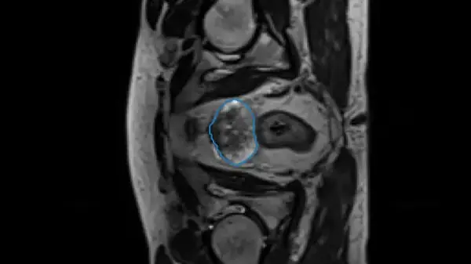

U‑Net Hip MRI Segmentation
Trained and evaluated a U‑Net for HIP MRI segmentation. Implemented augmentation, IoU/Dice metrics, error analysis, and exported an inference script.
Final‑year Computer Science student in Brisbane focused on U‑Net segmentation, MDP/Search, and turning models into usable products (Python, PyTorch, FastAPI, Docker, SQL).
Trained and evaluated a U‑Net for HIP MRI segmentation. Implemented augmentation, IoU/Dice metrics, error analysis, and exported an inference script.
VAE Generative model trained on Fashion MNIST Dataset. Currently being expanded to WGAN-GP.
Coming up: turn the U‑Net into a FastAPI service with tests, CI/CD, and drift monitoring. This slot shows recruiters you’re actively building.
Hi, I’m Kurt — a final‑year Computer Science student at the University of Queensland focusing on applied machine learning. I enjoy shipping small, well‑tested systems and learning by building. I’m currently looking for graduate roles in ML Engineering, Data Science, or MLOps in Brisbane/SE QLD (open to remote within AU).
Best way to reach me is email: kurt.armamento190@gmail.com. I also post code on GitHub and career updates on LinkedIn.